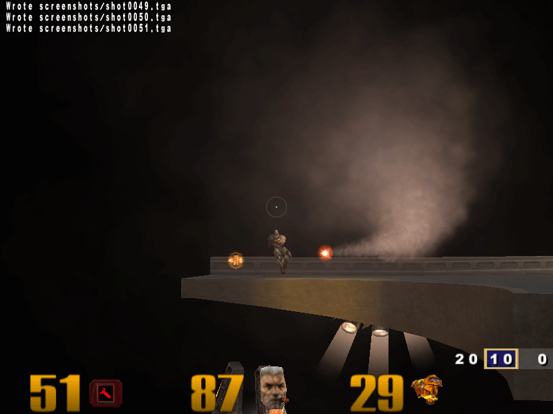
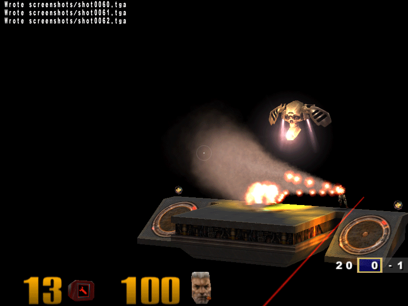
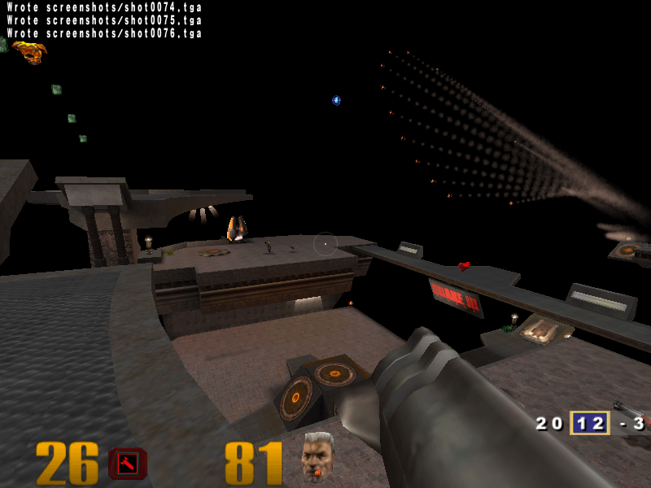

In this article I'll explain how to compile and modify the Quake 3 source code to create a Homing Missile. This article is intended for beginners.
Background
Quake III was released few years back (somewhere in 2001-2002 if I am not wrong). At the same time, I was looking forward to buy a new PC and while researching for the same, I got a computer magazine with Quake III demo. That's when I decided that Quake III was going to be my benchmark for the new PC. Excellent game and my favorite till date. Now let me stop telling stories and get back to the point.
Source code
Quake3's source code was launched some time after its release. The code does not have a lot of comments, but its very readable and understandable. You must know C and a bit of 3D vector mathematics. Mathematics I suppose can be learnt in case you don't have that background. At times you might get stuck in understanding the code due to vector operations performed. Just take a pen and paper and calculate it down, life will be much easier with those two objects.
The entire source code has not been released. Though I don't know which part, a major part like the rendering engine could be under cover.
Quake3's 3D engine has been proven as one of the best 3D engines made and some people have also said that nobody can write better code than the one written for this engine. Recently I also had a chance to go through the Microsoft Techfest, in which, one of the demonstrated research project was based on Quake III. FYI: It was regarding improving multiplayer gaming performance over a low bandwidth network around 100kbps. So, there is a lot of potential in reusing its code if your research/application requirements fit the same.
NOTE: Quake 3's source code is free does not mean that its game data is free. And you cannot play game without the game data (maps, sounds, music, bot models, etc.)That's why you still need to buy an original Quake 3 CD.
Why am I re-writing this?
You will find many websites with bits and pieces of information for compiling and modifying Quake 3 source. Inadequate or incorrect information leads to frustration most of the time as it was the case with me. It took a lot of time for me to finally compile and run quake 3 from the compiled code. Creating mods (relatively means modifying source) is another story, but that was fun. The code-change illustrated here again took a lot of time. Understanding and tweaking the code given here is also a good way of learning some basics about this game.
Compiling the source code
Before you start, it is also important to check the following:
You have a full version of Quake 3 already installed. (Demo version won't work for us)
Download Quake 3 point release 1.32 from the website and install it to your Quake 3 game directory.
Check that you have Visual Studio 2003 installed on your machine. If you don't have VS2k3 and use VC++6.0, life's a bit difficult. Please see if this helps.
Now follow the steps given below to complie the source code.
cd.. quake3 +set fs_game Mod
This tells the quake3 executable to load the game with our code.
Now to run the game with your compiled code, just double-click the batch file, and you are ready to play. An important step has been covered by this time.
NOTE: Debugging is (as usual) possible in Quake 3 too. That is not covered in this article.
NOTE: Actually you don’t need to change the exe until you want some changes in the quake3 EXE project code. But I recommend this since I have noticed sometimes the original EXE takes a lot of time to load when we implement our modifications.
WARNING: While making your modifications it is recommended to run Quake 3 in windowed mode ( and not the normal full screen mode). You can switch to windowed mode by the pressing Alt+Enter. Quake 3 remembers the configuration (atleast on my PC) while loading the next time. Runtime errors may hang up your inputs in full screen mode and thereby forcing you to restart without proper shutdown.
Screenshots of what we are going to develop in this series
Along the way, there will be lots of reading and coding.... here are some screenshots

Above: Grunt being chased by the homing missile

Above: Grunt under fire (Homing missile with fireworks).
Below: Grunt has a narrow escape. Missiles scatter in air.

Further...
Tips on compiling Quake III source code with VC++ 6.0